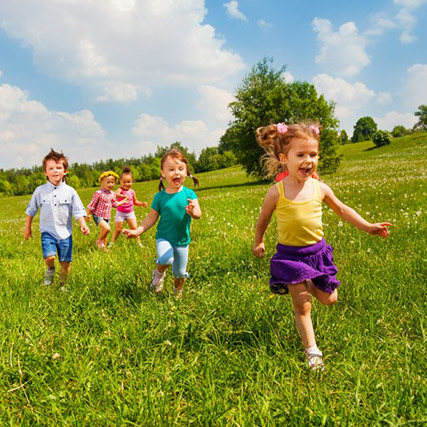

Лето - удивительная пора. Это время прогулок, отдыха и путешествий. Свое лето я провел очень интересно и разнообразно. В начале июня я отправился в лагерь на 14 дней. Это была моя первая поездка без родителей, поэтому я очень переживал. Но все прошло чудесно. Лагерь находился в хвойном лесу, где мы гуляли и дышали свежим воздухом каждый день. В июле мы с родителями отправились на море. Там мы загорали, купались. Папа научил меня плавать брасом. Море подарило мне множество незабываемых впечатлений. Когда я вернулся домой, то проводил остаток лета с друзьями во дворе. Мы ни минуты не скучали! Мы занимались спортом, строили домики и играли в футбол. Как жаль, что лето закончилось.
А следующее фото - это оригинальня ссылка
